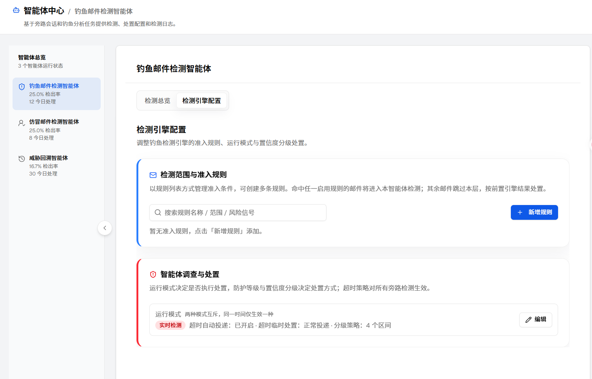
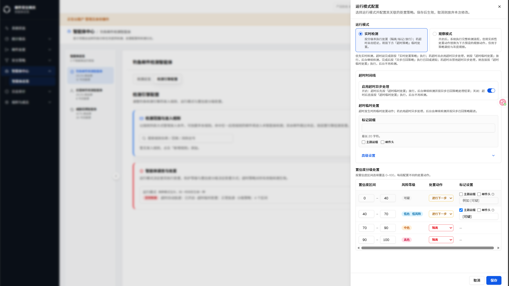
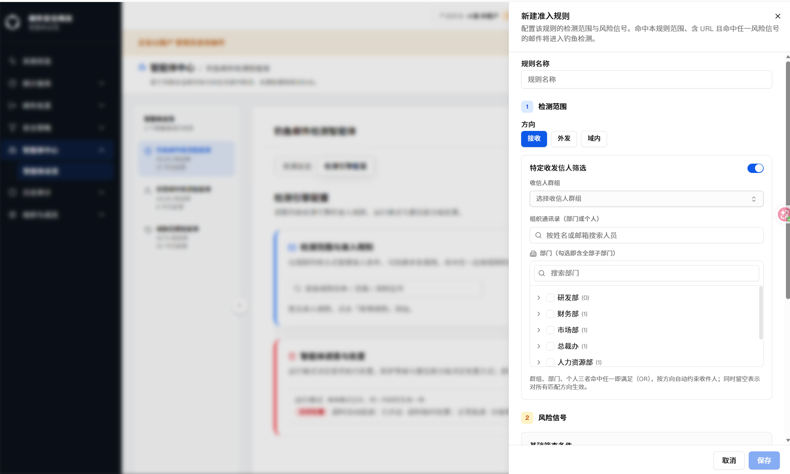
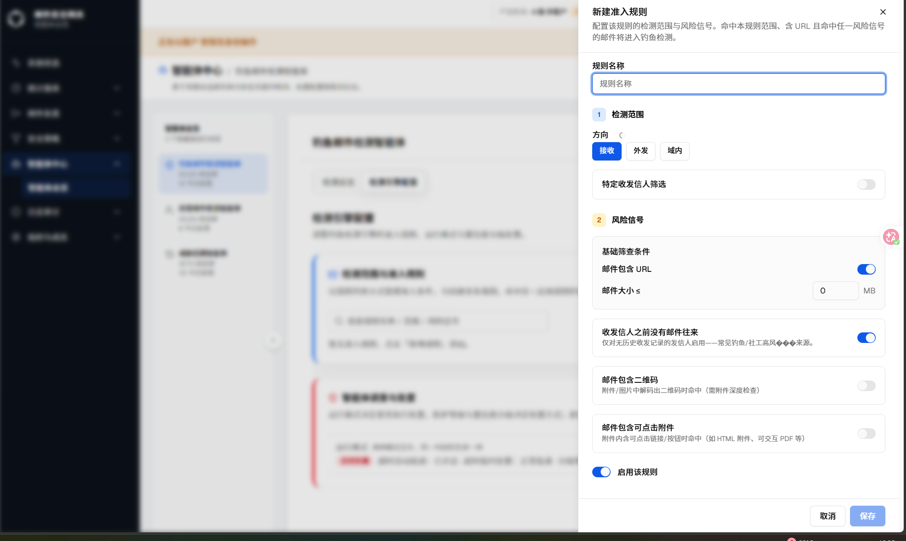
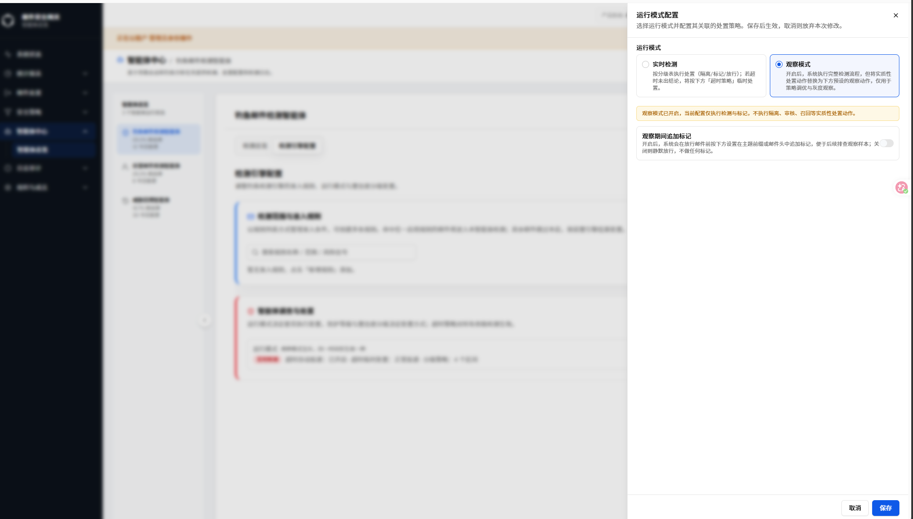
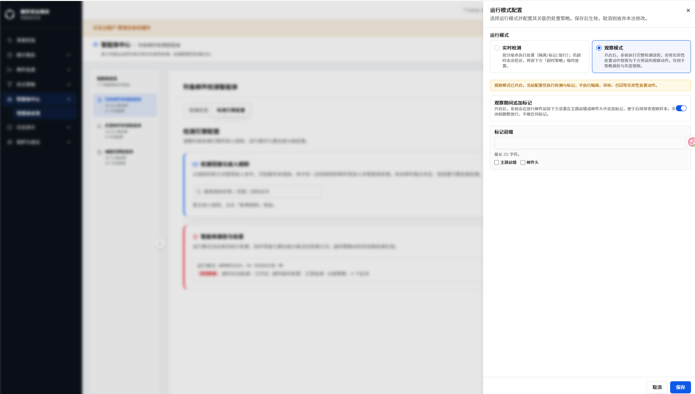

| 字段 | 内容 |
|---|---|
| 文档编号（文件 ticket） | GT-12841 |
| 需求名称 | GT-12859 钓鱼邮件检测智能体-检测配置模块前端优化 |
| 规格类型 | 增量规格（Incremental）· 前端文案 / 信息层级 / 布局优化 |
| 当前版本 | v2 |
| 生成日期 | 2026-08-11 |
| 路由路径 | 智能体中心 → 钓鱼邮件检测智能体 → 检测引擎配置 Tab |
| 组件路径 |
src/components/phishing-detection/config/confidence-bands-editor.tsx、
src/components/phishing-detection/config/*（智能体调查与处置卡片、运行模式配置抽屉、准入规则抽屉相关组件）
|
| webapp commit | working-tree（工作区变更，待提交） |
| 对照 spec commit | not-used |
| 历史对话记录 | 当前上下文已提供（用户本轮描述的检测配置模块优化要求 + 6 张用户实拍产品截图 + 本轮补充的功能背景/功能点/业务逻辑/权限边界/布局/交互/异常场景/关联模块说明要求） |
| 事实源优先级 | 1. 用户当前描述；2. 用户提供的真实产品截图；3. webapp 源码 |
| 浏览器验证状态 | 用户实拍截图（浅色主题 / 钓鱼邮件检测智能体 / 检测引擎配置页），未在本次生成过程中另行使用浏览器复核；截图即事实源。本版新增的功能背景、业务逻辑、权限边界、布局与交互细节中，凡无法从截图或用户描述中直接验证的内容，均在正文标注并归入待确认事项，不作臆造。 |
| 变更类型 | 文案修正 + 信息层级优化（风险等级徽章）+ 可用性优化（数字显示） |
本次优化作用于钓鱼邮件检测智能体「检测引擎配置」页的文案、信息层级和数字显示样式，不改变任何配置项的可见性或可编辑权限。矩阵记录该配置页在各形态 / 角色下的可访问性；本次全部截图均在 AI版·单租户 / 平台管理员下实拍，其余形态 / 角色未逐一验证。
| 功能 / 元素 | 变更 | AI-单 平台管理员 |
传统-单 平台管理员 |
云-多 平台管理员 |
云-多 租户管理员 |
AI-多 平台管理员 |
AI-多 租户管理员 |
传统-多 平台管理员 |
传统-多 租户管理员 |
|---|---|---|---|---|---|---|---|---|---|
| 智能体调查与处置卡片说明文案 | #1 | ✅ | ? | ? | ? | ? | ? | ? | ? |
| 置信度分级处置表格 · 风险等级徽章 | #2 | ✅ | ? | ? | ? | ? | ? | ? | ? |
| 置信度区间编辑器 · 数字与列宽 | #3 | ✅ | ? | ? | ? | ? | ? | ? | ? |
| 准入规则抽屉 / 运行模式抽屉（现状记录） | #4 | ✅ | ? | ? | ? | ? | ? | ? | ? |
? 标记项：钓鱼邮件检测智能体是否在多租户形态下对租户管理员开放、检测引擎配置页在其他产品形态下的呈现是否一致，本次均未验证，列入待确认 Q-001。三项优化均为纯前端文案 / 样式调整，逻辑上不因产品形态或角色而异，但呈现入口的可见性仍需回归确认。
问题背景：「智能体调查与处置」卡片位于检测引擎配置页第二张核心卡片，卡片说明用于告知用户运行模式、防护等级、置信度分级与超时策略之间的作用关系。此前该说明文案在渲染时夹带非预期的 Unicode 替换字符，导致语句在「防护等级与置信度分级决定处置方式」附近出现断裂或不可读片段，用户无法准确理解四者的关系描述，影响可读性与专业度。
目标：将说明文案修正为语义完整、无异常字符的表述，使用户在进入检测引擎配置页的第一屏即可正确理解「是否处置」由运行模式决定、「如何处置」由防护等级与置信度分级共同决定、超时策略的适用范围为「所有旁路检测」，从而降低用户误解配置项作用关系的风险。
该说明文案为静态展示内容，不依赖接口返回数据，不参与任何业务判断或计算逻辑。卡片下方的运行模式徽章、超时自动投递状态、分级策略摘要仍来自现有的运行模式配置数据（其数据结构与读取逻辑详见变更 2、变更 3），文案修正与这些数据的读取、渲染逻辑无关联，不引入新的数据流转路径，也不影响卡片其余信息的展示时序。
该说明文案随「检测引擎配置」页面的可见性一并展示，权限边界与页面本身一致：当前已知 AI版·单租户·平台管理员可见；其余产品形态 / 角色下页面及卡片的可见性未逐一验证，见待确认 Q-001。文案内容本身为固定文本，不因角色不同而呈现差异化措辞，也不存在"角色仅可见文案某部分"的分段展示逻辑。
页面信息架构：智能体中心 → 钓鱼邮件检测智能体 → 检测引擎配置（Tab）→ 「智能体调查与处置」卡片（位于第二张核心卡片，紧邻「检测范围与准入规则」卡片下方）→ 卡片标题下方的说明文案区域。
原型 / 截图标注：见图 S-1，说明文案位于卡片标题「智能体调查与处置」正下方、运行模式徽章（如「实时检测」）与超时/分级摘要信息之上，字号与颜色继承卡片既有正文说明文字样式（灰色说明文字），未新增独立视觉容器或分隔线。
响应式 / 自适应规则：文案随卡片宽度自动换行，未观察到固定行数限制或文本截断（省略号），与卡片既有正文的换行规则一致；本次改动不涉及布局结构调整，窄屏下的独立换行表现未重复验证，标记为不适用。
视觉一致性要求：文案颜色、字号、行高沿用卡片既有说明文字样式，不引入新配色、字重或字体，与检测引擎配置页内「检测范围与准入规则」卡片的说明文案保持同一视觉语言。
主流程交互：文案为纯展示内容，不可点击、不可编辑；用户进入检测引擎配置页即可直接阅读，无需任何触发操作。
关键字段 hover 提示：该文案本身未观察到 hover 悬浮提示（无信息图标或下划线提示），鼠标悬停不产生额外的 tooltip 展示。
状态变化规则：不涉及加载态、空态或错误态——文案为前端静态内容，不发起异步请求，因此没有"加载中"或"加载失败"的中间状态。
批量操作与单条操作逻辑：不适用（该文案不是可操作的列表项或表单字段，没有单条/批量操作的概念）。
弹窗 / 抽屉 / 页面跳转触发条件：卡片右上角「编辑」按钮点击后会打开运行模式配置抽屉（详见变更 2、变更 3），该入口与本文案修正共享同一张卡片，但文案本身不是该抽屉的触发元素。
触发路径：智能体中心 → 钓鱼邮件检测智能体 → 检测引擎配置 Tab → 页面加载后直接可见 · 用户实拍（浅色主题）

| 元素 | 变更前 | 变更后 | 说明 |
|---|---|---|---|
| 智能体调查与处置卡片 · 说明文案 | 含编码异常字符的断裂语句 | 「运行模式决定是否执行处置，防护等级与置信度分级决定处置方式；超时策略对所有旁路检测生效。」 | 变更仅替换文案内容，字段结构与 i18n key 不变 |
| 卡片内运行模式徽章（如「实时检测」） | 不受影响 | 不受影响 | [Base]沿用既有渲染逻辑 |
| 卡片右上角「编辑」按钮 | 不受影响 | 不受影响 | [Base]点击进入变更 2/3 描述的运行模式配置抽屉 |
| 场景类别 | 说明 |
|---|---|
| 输入非法或边界值处理 | 不适用——该文案不是输入控件，不接受用户输入。 |
| 权限不足 / 操作冲突提示 | 若目标角色无该卡片查看权限，卡片及文案整体不渲染（沿用页面级权限控制，非本次改动新增逻辑）；具体的无权限降级表现（隐藏卡片 / 展示占位提示）未验证，并入 Q-001。 |
| 后端服务超时 / 降级表现 | 不适用——文案为前端静态内容，不发起网络请求，不存在因后端超时导致该文案缺失或显示异常的场景。 |
| 并发操作与数据一致性兜底 | 不适用——静态文案不涉及多用户并发写入，没有数据一致性冲突的可能。 |
| 关联维度 | 说明 |
|---|---|
| 上游依赖 | 无——纯静态文案，不依赖任何模块提供数据。 |
| 下游影响 | 无功能性下游影响；文案内容作为变更 2、变更 3 所在运行模式配置抽屉入口（「编辑」按钮）的上下文说明，但不影响该入口本身的交互逻辑。 |
| 配置联动关系 | 无——文案不随任何配置项的启用 / 禁用状态变化。 |
| 接口与数据表关联说明 | 无接口调用，无数据表字段变更；文案硬编码或通过静态 i18n 资源渲染（具体实现方式未在本次核实范围内确认）。 |
问题背景：「运行模式配置」抽屉选择「实时检测」时，下方展示「置信度分级处置」表格，按 0–100 连续区间分为 4 段，每段配置对应的处置动作。此前表格仅有「置信度区间」「处置动作」「标记设置」三列，用户需要自行心算每个数值区间对应的风险严重程度，缺乏直观的严重程度提示，尤其在调整区间边界或新增区间时，难以快速比较相邻区间之间的风险差异，容易出现误配置（例如将高危区间误设为较轻的处置动作）。
目标：新增风险等级视觉徽章，将数值区间转译为业务语言（可疑 / 低危 / 中危 / 高危），帮助用户在配置处置动作前快速建立风险直觉，降低误配置概率，同时提升表格整体的可读性和信息密度。
数据来源：风险等级不来自任何新增字段或接口返回值，而是纯前端计算值——读取当前行「置信度区间」的起始值（下界），代入固定映射表得到等级文案与配色 token，在渲染时插入表格单元格。
数据流转路径：置信度区间数值（用户已配置或默认值，来源于运行模式配置的既有数据结构）→ 前端渲染时按行读取下界 → 套用静态映射函数 → 输出等级文案 + 色阶 class → 渲染进风险等级列。全过程发生在前端渲染层，不产生额外的网络请求，不写入新字段；保存置信度区间时也不会连带保存风险等级，因为它不是持久化字段。
边界规则：映射按"下界所属的目标段"取值，若下界恰好等于某段的边界值（如 40、70、90），归属到以该值为下界的新段（即下界为 40 时归入「低危」而非「可疑」）。若用户后续调整区间为非标准分段，映射结果的准确性详见差异 D-001 及待确认 Q-002。
风险等级列的可见性与「运行模式配置抽屉 · 实时检测」分支的现有权限边界一致：具备编辑「智能体调查与处置」权限的角色（当前已知 AI版·单租户·平台管理员）可见该列；无编辑权限的角色能否以只读方式查看该抽屉、风险等级列是否同步只读展示，未验证，并入 Q-001。
风险等级本身不可编辑，因此不存在"可查看但不可编辑该列"的中间权限态——该列对所有可查看该表格的角色均为纯展示，不因角色差异呈现不同的编辑能力。
页面信息架构：检测引擎配置 Tab → 智能体调查与处置卡片 → 「编辑」→ 运行模式配置抽屉 → 运行模式「实时检测」分支 → 置信度分级处置表格（位于超时时间线、超时临时处置配置之下，是该分支的第三个配置区块）。
原型 / 截图标注：见图 S-3，风险等级列位于表格第 2 列，列宽随徽章文案长度自适应（「低危 低风险」为该列最长文案，决定该列的实际渲染宽度）；徽章为圆角矩形（药丸形）小标签，居中于单元格内。
响应式 / 自适应规则：新增列占用的横向空间来自变更 3 中"置信度区间列宽度优化"预留出的空间；表格整体宽度增加后，窄屏或抽屉收窄场景沿用既有横向滚动能力兜底展示完整列（详见变更 3 · D-002），未新增专门的响应式断点或列隐藏规则。
视觉一致性要求：四档色阶（灰 / 蓝 / 橙 / 红）与「处置动作」列中「隔离」等高风险处置选项的强调色在色相上保持一致的语义方向（红色系表示更高风险 / 更强处置），但为独立配色 token，不直接复用处置动作按钮的色值；徽章样式（圆角、字号、内边距）与检测引擎配置页内其他标签/徽章（如运行模式徽章「实时检测」）保持一致的视觉语言。
关键字段 hover 提示：风险等级徽章本身未观察到 hover 悬浮文案提示（截图中未展示 hover 态）；同一表格「标记设置」列中「邮件头」复选框旁的信息图标（ⓘ）疑似存在 hover 提示，但具体提示文案未在本次截图中呈现，标记为待确认（Q-004）。
主流程交互：用户打开运行模式配置抽屉、选中「实时检测」后，风险等级列随表格其余列一起渲染，无需额外点击或触发操作；用户调整某行「置信度区间」数值后，该行风险等级徽章是否实时联动重新计算（而非仅在下次打开抽屉时重算），未在本次截图中验证，标记为待确认（Q-005）。
状态变化规则：风险等级列没有独立的加载态或空态——只要该行置信度区间有值，风险等级即同步渲染；无网络请求，因此不存在"加载中"占位状态。
批量操作与单条操作逻辑：置信度分级处置表格当前为固定 4 行（未观察到新增 / 删除行的操作入口），风险等级列不支持批量修改，也不支持按行单独隐藏该列。
弹窗 / 抽屉 / 页面跳转触发条件：风险等级列本身不触发任何弹窗、抽屉或页面跳转；其所在的运行模式配置抽屉由「智能体调查与处置」卡片右上角「编辑」按钮触发打开，与变更 1、变更 3 共享同一入口。
触发路径：检测引擎配置页 → 「智能体调查与处置」卡片 → 点击右上角「编辑」按钮之前 · 用户实拍（浅色主题）
触发路径：从 S-2 起，点击「编辑」→ 打开「运行模式配置」抽屉 → 运行模式选中「实时检测」→ 下拉查看「置信度分级处置」表格 · 用户实拍（浅色主题）

| 元素 | 变更前 | 变更后 | 说明 |
|---|---|---|---|
| 置信度分级处置表格 · 表头 | 置信度区间 / 处置动作 / 标记设置（3 列） | 置信度区间 / 风险等级 / 处置动作 / 标记设置（4 列） | 新增「风险等级」列插入第 2 列 |
| 风险等级徽章 · 0–40 区间 | （无） | 「可疑」· 中性灰色徽章 | 新增按区间下界自动派生，不可编辑 |
| 风险等级徽章 · 40–70 区间 | （无） | 「低危 低风险」· 蓝色徽章 | 新增同时展示等级名与「低风险」补充说明 |
| 风险等级徽章 · 70–90 区间 | （无） | 「中危」· 橙色徽章 | 新增 |
| 风险等级徽章 · 90–100 区间 | （无） | 「高危」· 红色徽章 | 新增 |
| 置信度区间 / 处置动作 / 标记设置列 | 既有配置与校验逻辑 | 不变 | [Base]数据结构、接口字段、保存行为均未改动 |
| 场景类别 | 说明 |
|---|---|
| 输入非法或边界值处理 | 若用户将某行置信度区间的起始值修改为超出 0–100 的数值或非数字，风险等级列的映射结果、数字输入框本身的校验提示未在本次截图中观察到，标记为待确认（Q-006）。 |
| 权限不足 / 操作冲突提示 | 无编辑权限时抽屉是否可打开、风险等级列是否降级为只读展示，未验证（并入 Q-001）。 |
| 后端服务超时 / 降级表现 | 风险等级为纯前端计算值，不发起请求，不存在因后端超时导致该列显示异常的场景；但若置信度区间数据本身因接口超时未能正确加载，风险等级列会随该行整体渲染失败或显示默认值，具体降级表现未验证。 |
| 并发操作与数据一致性兜底 | 置信度区间保存后，风险等级列是否需要与后端返回的最新数据重新计算以避免本地缓存与服务端不一致，未验证；由于风险等级不持久化，理论上每次渲染都基于当前展示的区间值重新计算，不存在独立的并发写入冲突。 |
| 关联维度 | 说明 |
|---|---|
| 上游依赖 | 风险等级列依赖「置信度分级处置」表格已有的置信度区间数据（由运行模式配置抽屉的实时检测分支提供），是该数据的派生展示，不依赖其他独立模块。 |
| 下游影响 | 本次新增列会增加表格整体宽度，影响变更 3 中的列宽与横向滚动表现（两者为同一表格的关联优化，需配合验证）；风险等级本身不回写任何字段，因此不影响置信度区间的保存逻辑、超时策略或观察模式分支。 |
| 配置联动关系 | 风险等级映射不受「运行模式」（实时检测 / 观察模式）切换影响——仅在选中「实时检测」时该表格本身可见，风险等级列跟随表格整体的可见性联动，无独立的启用 / 禁用开关。 |
| 接口与数据表关联说明 | 无新增接口调用；风险等级不对应任何数据表字段，仅在前端渲染层根据已读取的置信度区间字段计算得出。 |
问题背景：置信度分级处置表格中，「置信度区间」列由两个数字输入框（起始值、结束值）以短横线分隔组成。此前区间列最小宽度固定为 128px，数字输入框宽度固定为 56px 且可收缩；输入框未设置文本居中和等宽数字样式，当区间边界为两位数（如 40、70、90）或三位数（100）时，数字在输入框内出现裁切或视觉拥挤，尤其在新增风险等级列（变更 2）后可用横向空间进一步减少，问题更加明显。
目标：确保 0–100 范围内任意两位数、三位数的置信度区间数值都能在输入框内完整显示、不裁切，同时与新增的风险等级列共存，不破坏整体表格的可读性与美观度。
flex-shrink: 0，避免被同行其他列挤压收缩。font-variant-numeric: tabular-nums 等宽数字样式，确保多行数字纵向对齐美观。本次改动仅为纯样式（CSS）调整，不涉及任何数据读取、计算或提交逻辑；置信度区间数值的存储字段、输入校验规则、保存接口调用与改动前完全一致。
数据流转路径未发生变化：用户在输入框中修改数值 → 触发既有的本地状态更新 / 校验 → 点击「保存」后按既有接口提交 → 与本次列宽 / 样式调整无关联。
样式调整对所有可查看 / 编辑该表格的角色一视同仁，不存在因角色不同而应用不同列宽或输入框样式的差异化规则。角色对该表格的可编辑权限边界沿用变更 2 中描述的现状（当前已知 AI版·单租户·平台管理员可编辑，其余角色权限未验证，并入 Q-001）。
页面信息架构：与变更 2 共享同一位置——运行模式配置抽屉 · 实时检测分支 · 置信度分级处置表格 · 「置信度区间」列（表格第 1 列）。
原型 / 截图标注：见图 S-4，区间列 4 行数值「0–40」「40–70」「70–90」「90–100」，两位数与三位数均在输入框内完整显示、居中对齐，起始值、分隔符与结束值间距清晰。
响应式 / 自适应规则：列宽与输入框宽度调整后表格总宽度增加，窄屏或抽屉收窄场景沿用表格既有的横向滚动能力兜底（见差异 D-002），未新增独立的响应式断点、列隐藏或列宽自动收窄规则。
视觉一致性要求：输入框的圆角、边框颜色、聚焦态样式沿用检测引擎配置模块内其他数字输入框（如准入规则抽屉中的「邮件大小 ≤ __ MB」输入框）的既有样式规范，本次未引入新的输入框视觉语言，仅调整尺寸与文本对齐方式。
关键字段 hover 提示：区间数字输入框本身未观察到 hover 悬浮文案提示；聚焦（focus）态的边框高亮效果沿用既有输入框交互，未在本次截图中重点验证聚焦态截图，标记为待确认（Q-007）。
主流程交互：用户点击输入框 → 聚焦 → 修改数值 → 失焦或按 Tab 切换至下一输入框，交互流程与改动前一致，仅数字的视觉呈现（宽度、居中、等宽字体）发生变化。
状态变化规则：不涉及加载态 / 空态；输入非法值时的校验反馈样式未在本次截图中观察到，标记为待确认（并入 Q-006）。
批量操作与单条操作逻辑：4 行区间为固定行，不支持批量粘贴或批量调整数值；每个输入框独立编辑、独立失焦触发校验（若有）。
弹窗 / 抽屉 / 页面跳转触发条件：不适用，本次改动不涉及新的弹窗、抽屉或页面跳转触发点，沿用变更 1、变更 2 共享的运行模式配置抽屉入口。
触发路径：运行模式配置抽屉 → 运行模式「实时检测」→ 置信度分级处置表格 → 观察「置信度区间」列的 4 行数字 · 用户实拍（浅色主题）
| 元素 / 样式属性 | 变更前 | 变更后 | 说明 |
|---|---|---|---|
| 置信度区间列 · 最小宽度 | min-width: 128px |
min-width: 160px |
变更为新增风险等级列（变更 2）预留显示空间 |
| 区间数字输入框 · 宽度 | width: 56px（可收缩） |
width: 64px，flex-shrink: 0 |
变更固定宽度，避免被同行其他列挤压收缩 |
| 区间数字输入框 · 文本样式 | 默认左对齐，无等宽数字 | 水平内边距 + 文本居中 + font-variant-numeric: tabular-nums |
新增数字等宽对齐，视觉更整齐 |
| 起始值 / 分隔符 / 结束值 · 间距 | 间距偏紧 | 加宽间距 | 变更避免数字与分隔符、容器边界相互挤压 |
| 数据结构 / 校验规则 / 接口 / 保存逻辑 | 既有实现 | 不变 | [Base]仅样式调整，不涉及数据与行为改动 |
| 窄屏表格滚动能力 | 横向滚动 | 横向滚动（沿用） | [Base]列宽调整后仍依赖既有横向滚动兜底 |
| 场景类别 | 说明 |
|---|---|
| 输入非法或边界值处理 | 用户输入负数、超过 100 的数值、非数字字符或空值时的校验规则与错误提示样式，未在本次截图中观察到，标记为待确认（并入 Q-006）；理论上样式调整不改变既有校验逻辑，但校验提示气泡 / 文案是否会因输入框加宽而重新排布，需后续验证。 |
| 权限不足 / 操作冲突提示 | 与变更 2 一致，权限边界未变化，无权限时的降级表现未验证（并入 Q-001）。 |
| 后端服务超时 / 降级表现 | 样式调整不涉及请求，若加载置信度区间数据的接口超时，输入框会按既有的加载失败 / 默认值兜底逻辑展示，与列宽样式无关。 |
| 并发操作与数据一致性兜底 | 多个管理员同时编辑同一运行模式配置时的并发写入冲突处理（如后写覆盖、乐观锁提示）未在本次截图中观察到，且非本次样式改动范围，标记为待确认（Q-008）。 |
| 关联维度 | 说明 |
|---|---|
| 上游依赖 | 置信度区间数值来自运行模式配置抽屉 · 实时检测分支的既有数据结构，样式调整不改变该数据的来源模块。 |
| 下游影响 | 列宽调整直接影响变更 2 风险等级列的可用横向空间分配（两者需配合展示，已在方案中统一考虑）；不影响超时时间线、超时临时处置等同一抽屉内的其他配置区块。 |
| 配置联动关系 | 无新增的启用 / 禁用联动；样式调整不受运行模式（实时检测 / 观察模式）切换以外的任何配置项影响。 |
| 接口与数据表关联说明 | 无新增接口调用，无数据表字段变更；仅调整前端组件 confidence-bands-editor.tsx 内的样式属性。 |
触发路径：检测引擎配置页 → 「检测范围与准入规则」卡片 → 点击「新增规则」→ 「检测范围」步骤 → 开启「特定收发信人筛选」 · 用户实拍（浅色主题）

触发路径：从 S-5 起，关闭「特定收发信人筛选」→ 下拉至「风险信号」步骤 · 用户实拍（浅色主题）

触发路径：智能体调查与处置卡片 → 编辑 → 运行模式配置抽屉 → 运行模式选中「观察模式」→ 「观察期间追加标记」保持关闭 · 用户实拍（浅色主题）

触发路径：从 S-7 起，开启「观察期间追加标记」 · 用户实拍（浅色主题）

| 界面 / 区域 | 现状配置项 | 本次是否变更 | 依据 |
|---|---|---|---|
| 准入规则抽屉 · 检测范围步骤 | 规则名称、方向（接收/外发/域内）、特定收发信人筛选（收信人群组 + 组织通讯录部门树） | 未变更 | 图 S-5 |
| 准入规则抽屉 · 风险信号步骤 | 基础筛查条件（URL / 邮件大小 / 无历史往来 / 二维码 / 可点击附件）、启用该规则总开关 | 未变更 | 图 S-6 |
| 运行模式配置抽屉 · 观察模式分支 | 观察模式说明、橙色限制提示条、观察期间追加标记开关、标记前缀、主题前缀/邮件头复选框 | 未变更 | 图 S-7、图 S-8 |
| 运行模式配置抽屉 · 实时检测分支 | 超时时间线、超时临时处置、置信度分级处置表格 | 置信度分级处置表格新增风险等级列（见变更 2）、区间数字与列宽优化（见变更 3）；其余配置项未变更 | 图 S-3 / S-4，参见变更 2、变更 3 |
| 状态 | 已确认·有意约束 |
| 描述 | 变更 2 新增的「可疑/低危/中危/高危」风险等级徽章，是按置信度区间下界的固定 4 段静态映射自动派生的展示值，不对应任何新增或修改的后端字段，也不支持用户单独编辑「风险等级」而不改变区间数值。若某行区间的下界正好落在两个映射段的边界（如恰为 40、70、90），映射结果以“下界所属的目标段”为准。 |
| 解决版本 | GT-12859 · 2026-08-11 |
| 验证依据 | 图 S-3 / S-4 中区间与风险等级的对应关系；用户当前描述「按置信度区间从低到高自动派生」 |
| 状态 | 已确认·预期内 |
| 描述 | 区间列最小宽度由 128px 调整为 160px、输入框由 56px 调整为 64px 后，表格总宽度增加。窄屏或抽屉收窄场景下，表格仍依赖已有的横向滚动能力展示完整列，未新增专门的响应式断点或列隐藏规则。 |
| 解决版本 | GT-12859 · 2026-08-11 |
| 验证依据 | 用户当前描述「窄屏场景沿用表格横向滚动能力」 |
| 状态 | 已知·未处理 |
| 描述 | 图 S-6 中「收发信人之前没有邮件往来」项的灰字说明「仅对无历史收发记录的发信人启用——常见钓鱼/社工高风险来源」在实拍截图中「风险」二字附近出现字形渲染异常（疑似源文本或字体回退问题）。该文案不属于本轮 GT-12859 三项优化范围（智能体调查与处置文案、风险等级徽章、置信度数字显示），故本次未修复，仅在此记录现象以避免被误认为已解决。 |
| 处理 | 建议作为独立缺陷单独排查该文案的源文件编码与渲染链路，确认后再决定是否需要新增变更点修复。 |
| 验证依据 | 图 S-6 截图中该行说明文案的实际渲染字形 |
| 状态 | 待确认 |
| 问题 | 本次全部截图均在 AI版·单租户 / 平台管理员下实拍。云-多 / AI-多 / 传统-多形态下，租户管理员是否可访问「钓鱼邮件检测智能体 → 检测引擎配置」页、三项优化的呈现是否一致，未逐一验证；变更 1～3 中涉及的「无编辑权限时的降级表现」（隐藏卡片、只读展示等）同样归入本项。 |
| 影响 | 产品形态 × 角色矩阵中标记为 ? 的单元格；变更 1.4/1.9、2.4/2.9、3.4/3.9 中标注为"并入 Q-001"的角色与权限相关内容 |
| 建议 | 在各形态 / 角色账号下打开检测引擎配置页，确认卡片文案、风险等级徽章与置信度输入框显示一致后补充矩阵；同时确认无权限角色的具体降级表现（隐藏 / 只读 / 提示） |
| 状态 | 待确认 |
| 问题 | 当前风险等级徽章按「区间下界所属的固定 4 段（0–40/40–70/70–90/90–100）」静态映射派生。若用户后续将置信度区间调整为非标准分段（例如新增第 5 段，或将某段下界改为 35），风险等级的映射规则、显示文案（可疑/低危/中危/高危）是否需要同步调整或允许自定义，需与产品确认。 |
| 影响 | 置信度分级处置表格在非默认区间配置下的风险等级显示准确性 |
| 建议 | 与产品确认风险等级映射规则的适用边界，必要时补充映射算法说明或改为可配置项 |
| 状态 | 待确认 |
| 问题 | 用户本次提供的 6 张截图均为浅色主题。风险等级徽章的中性灰/蓝/橙/红四档色阶、置信度区间数字的对比度，在深色主题下是否同样清晰可辨，未验证。 |
| 影响 | 深色主题用户对风险等级色阶与置信度数字的辨识度 |
| 建议 | 切换至深色主题打开运行模式配置抽屉，补充实拍截图确认色阶对比度与数字可读性 |
| 状态 | 待确认 |
| 问题 | 图 S-3 中置信度分级处置表格「标记设置」列的「邮件头」复选框旁展示信息图标（ⓘ），疑似鼠标悬停会展示补充说明文案，但本次用户提供的截图均为静态默认态，未捕获 hover 态截图，具体提示文案内容未知。 |
| 影响 | 用户角色与权限边界之外，属于关键字段交互设计的信息缺口；影响变更 2 交互设计小节（2.6）的完整性 |
| 建议 | 在运行模式配置抽屉的置信度分级处置表格中，将鼠标悬停在「邮件头」旁的信息图标上，补充 hover 态截图与提示文案原文 |
| 状态 | 待确认 |
| 问题 | 风险等级为前端按区间下界计算的派生值。用户在抽屉内实时修改某行区间起始值后，对应的风险等级徽章文案与配色是否立即重新计算并刷新展示（而非需要重新打开抽屉才生效），本次截图为静态终态，未验证该实时联动行为。 |
| 影响 | 变更 2 交互设计小节（2.6）"主流程交互"的完整性；若非实时联动，用户可能在保存前看到与实际配置不一致的风险等级提示 |
| 建议 | 在运行模式配置抽屉中修改某行置信度区间起始值（如将 70 改为 50），观察风险等级徽章是否立即从「中危」变为「低危」，补充前后对比截图 |
| 状态 | 待确认 |
| 问题 | 用户在置信度区间输入框中输入负数、超过 100 的数值、非数字字符、空值，或使起始值大于结束值时，系统的校验规则（是否阻止提交、是否自动纠正、错误提示文案与展示位置）未在本次截图中观察到；这类校验行为是否因变更 3 的输入框宽度调整而受到影响（如错误提示气泡的定位）同样未知。 |
| 影响 | 变更 2 异常场景小节（2.9）、变更 3 交互设计（3.6）与异常场景（3.9）的完整性 |
| 建议 | 在置信度区间输入框中分别输入负数、超过 100 的数值、非数字字符、空值及"起始值大于结束值"的组合，补充触发校验后的截图与错误提示文案 |
| 状态 | 待确认 |
| 问题 | 变更 3 调整了输入框宽度、内边距和文本对齐方式，但用户提供的截图均为失焦（blur）态，未捕获点击输入框后的聚焦态（边框高亮、光标位置）截图，无法确认宽度调整后聚焦态的视觉效果是否受影响。 |
| 影响 | 变更 3 交互设计小节（3.6）"关键字段 hover 提示"及聚焦态描述的完整性 |
| 建议 | 点击任一置信度区间输入框使其进入聚焦态，补充该状态下的截图 |
| 状态 | 待确认 |
| 问题 | 若两名具备编辑权限的管理员同时打开同一「运行模式配置」抽屉并分别修改置信度区间或处置动作后保存，系统是否存在乐观锁提示、后写覆盖警告或强制刷新机制，未在本次截图与用户描述中体现，且不属于变更 1～3 的样式/文案优化范围。 |
| 影响 | 变更 3 异常场景小节（3.9）"并发操作与数据一致性兜底"的完整性；影响多管理员协作场景下的数据一致性风险评估 |
| 建议 | 与产品/后端确认运行模式配置保存接口是否具备并发冲突检测机制（如版本号校验），必要时补充专门的并发场景测试与截图 |
| 版本 | 日期 | commit | 摘要 |
|---|---|---|---|
| v1 | 2026-08-11 | working-tree |
按 html-spec-PM-version 技能规范重新生成 GT-12841.html（需求名称：GT-12859 钓鱼邮件检测智能体-检测配置模块前端优化），取代此前不合规的草稿版本：移除 hero header 大标题区与变更卡片总览区块；补齐目录（A/B 固定章节 + GT-12859 一级需求 + 变更 1~4 二级 + 1.1/1.2/1.3 三级）、元信息与事实源、产品形态 × 角色矩阵；将原「六、截图参考」的外链列表改写为 4 个 .interaction-preview 截图式交互预览区块（S-1~S-8，含触发路径、figure/img/figcaption、逐元素变更表）；下载并归档用户提供的 6 张截图至 screenshots/（GT-12859-S1~S6-*.png），改为本地相对路径引用；新增差异标注 D-001~D-003（含 D-003 记录准入规则抽屉说明文案的既有字形渲染异常，非本次改动范围）、待确认事项 Q-001~Q-003；变更 1~3 对应实际优化（智能体调查与处置文案修正、风险等级徽章新增、置信度数字与列宽优化），变更 4 明确标注为关联界面现状记录、非功能变更；文档不含 <script>、表单控件或事件属性。 |
| v2 | 2026-08-11 | working-tree |
按用户要求，为变更 1、变更 2、变更 3 各补充 8 类内容并重排为 1.1～1.10 / 2.1～2.10 / 3.1～3.10 三级结构：功能背景与目标、功能点清单（逐条说明实现逻辑）、关键业务逻辑与数据流转、用户角色与权限边界、界面布局设计（信息架构/截图标注/响应式规则/视觉一致性）、交互设计（hover 提示/主流程交互/状态变化/批量与单条操作/弹窗触发条件）、截图式交互预览（原有内容位置调整，未变更截图本身）、逐元素变更（原有内容位置调整）、异常场景（输入非法值/权限冲突/后端超时/并发一致性，均按截图与描述如实标注"待确认"而非臆造）、关联功能模块（上游依赖/下游影响/配置联动/接口与数据表关联）；同步更新目录结构；新增待确认事项 Q-004~Q-008（邮件头信息图标 hover 提示文案、区间数值修改后风险等级是否实时联动、数字输入框非法值校验、输入框聚焦态截图缺失、并发编辑冲突处理机制），编号接续 Q-001~Q-003 不重置；变更 4（记录性）与差异标注 D-001~D-003 保持不变；文档仍不含 <script>、表单控件或事件属性。 |